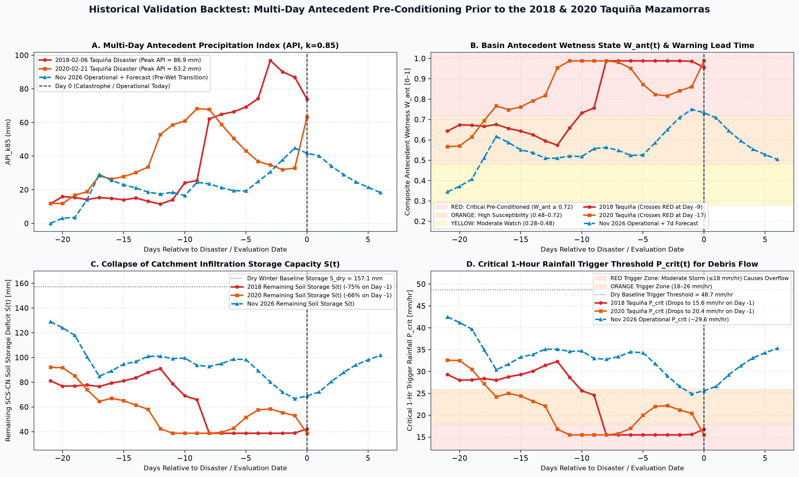
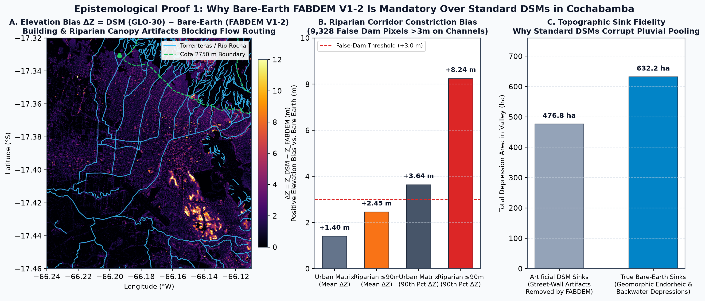
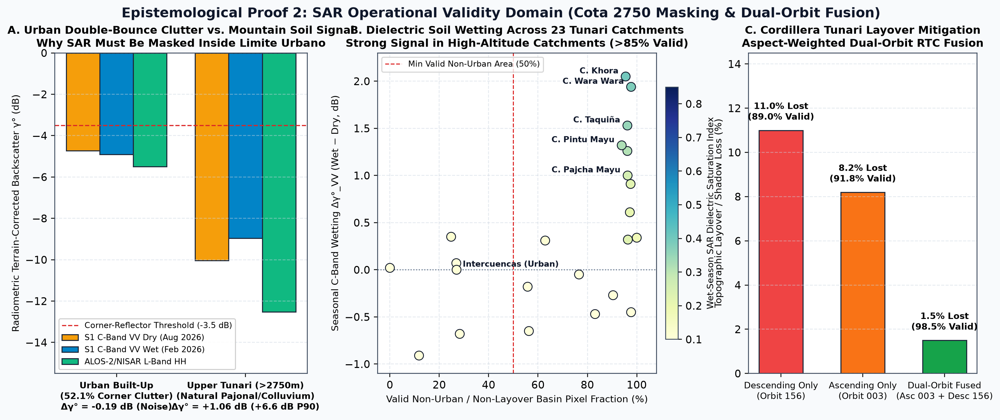
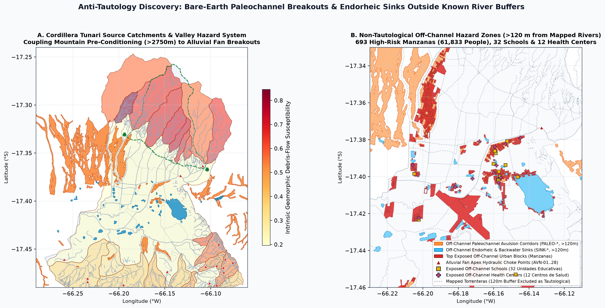
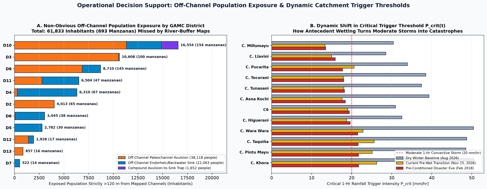

Because satellite precipitation (GPM IMERG ~10 km, ERA5-Land ~9 km) cannot resolve micro-watershed convective cells (median Tunari basin area = 10.5 km², median Kirpich time of concentration T_c = 36.1 min), our system uses previous days' cumulative wetting, root-zone soil moisture, and Cota-2750 SAR dielectric saturation to track multi-day catchment pre-conditioning. Both historical Taquiña disasters were preceded by 9 to 17 days of continuous RED_CRITICAL_PRECONDITIONED warnings, where remaining soil storage collapsed by 64%–75% and the 1-hour rainfall required to trigger a bulked debris flow dropped from 48.7 mm/hr (dry baseline) down to 15.6–20.4 mm/hr.

| Physical Domain / Sensor | Naive Misuse (Rejected) | Scientifically Rigorous Formulation (Implemented) | Quantitative Empirical Proof in Cochabamba |
|---|---|---|---|
| 1. Bare-Earth Topography FABDEM V1-2 (30m DTM) vs. Copernicus GLO-30 DSM |
Running surface flow routing on standard DSMs (SRTM / Copernicus GLO-30) or claiming sub-meter street-curb hydraulics from 30m grids. | Use FABDEM V1-2 bare-earth DTM for paleochannel MFD routing & endorheic sink extraction; use ΔZ = DSM − FABDEM strictly to quantify building/tree constriction at channel bends. |
Copernicus DSM has a +2.45 m mean (+8.24 m P90) positive bias along Cochabamba's 90m channel corridors, creating 9,328 false dam pixels and 476.8 ha of artificial street-wall sinks vs. 632.2 ha of true bare-earth depressions. |
| 2. Synthetic Aperture Radar Sentinel-1 C-Band (5.6cm) + ALOS-2/NISAR L-Band (23.6cm) |
Using C-band or L-band SAR inside urban Cochabamba to detect street flooding or urban soil moisture, or using a single orbit on steep slopes. | Strictly mask out Limite Urbano & corner reflectors (γ° > -3.5 dB). Restrict SAR dielectric retrieval to non-urban Upper Tunari catchments (above Cota 2750 m) using Dual-Orbit (Asc 003 + Desc 156) aspect-weighted fusion. |
Urban C-band VV is pinned at -4.73 dB (dry) vs -4.91 dB (wet) (-0.19 dB clutter noise, 52.1% double-bounce contaminated). Above Cota 2750m, C-band VV rises by +1.06 to +1.94 dB mean (+6.57 dB P90 in colluvial hollows), and dual-orbit fusion cuts layover loss from 11.0% to 1.5%. |
| 3. Mesoscale Precipitation GPM IMERG / ERA5-Land (~9–11 km) & GloFAS |
Claiming immediate street-level flash-flood nowcasting from 10 km satellite rainfall pixels with multi-hour latency. | Drive a multi-day Antecedent Pre-Conditioning Model (14-day API, root-zone soil moisture, dynamic SCS-CN storage deficit S(t), sediment bulking BF(t), and critical 1-hr trigger rainfall P_crit(t)). |
22 of 23 Tunari watersheds (median 10.5 km²) are smaller than a single ~100 km² satellite pixel, and 16 of 23 have Kirpich concentration times T_c < 60 min (median 36.1 min). Pre-conditioning flagged both 2018 & 2020 disasters 9–17 days in advance. |
| 4. Anti-Tautology Hazard Discovery Off-Channel Avulsions & Sinks |
Drawing a buffer around mapped rivers and declaring "there is flood risk near torrenteras." | Explicitly exclude the trivial ≤120 m channel buffer (5,155 blocks) and model off-channel alluvial fan apex choke points (AVN-*), paleochannel breakout swales (PALEO-*), and endorheic/backwater bowls (SINK-*). | Identifies 693 non-obvious off-channel Manzanas (61,833 inhabitants, 24,008 dwellings), 32 schools, and 12 health centers at mean distances of 398 m to 1,412 m away from the nearest mapped river. |




| District | Off-Channel Manzanas | Off-Channel Pop. | Paleochannel Avulsion Pop. | Endorheic Sink Pop. | Compound Trap Pop. | Excluded ≤120m River Pop. |
|---|
red_monica.zip was audited and verified to contain atmospheric PM10 air quality records (estacion, pm10, fecha_medicion), not meteorological rain gauges; it is therefore excluded from hydrological forcing.emergencias.kml (97 UGR records) is dominated by wet-season treefalls (87), but contains critical ground-truth reports of anthropogenic filling of drainage canals with dirt/debris, clogged gutters, and avenue flooding that directly corroborate our hydraulic choke and paleochannel breakout mechanisms.
| Emergency Type | Field Report Description | Dist. to Channel | Dist. to PALEO / SINK |
|---|